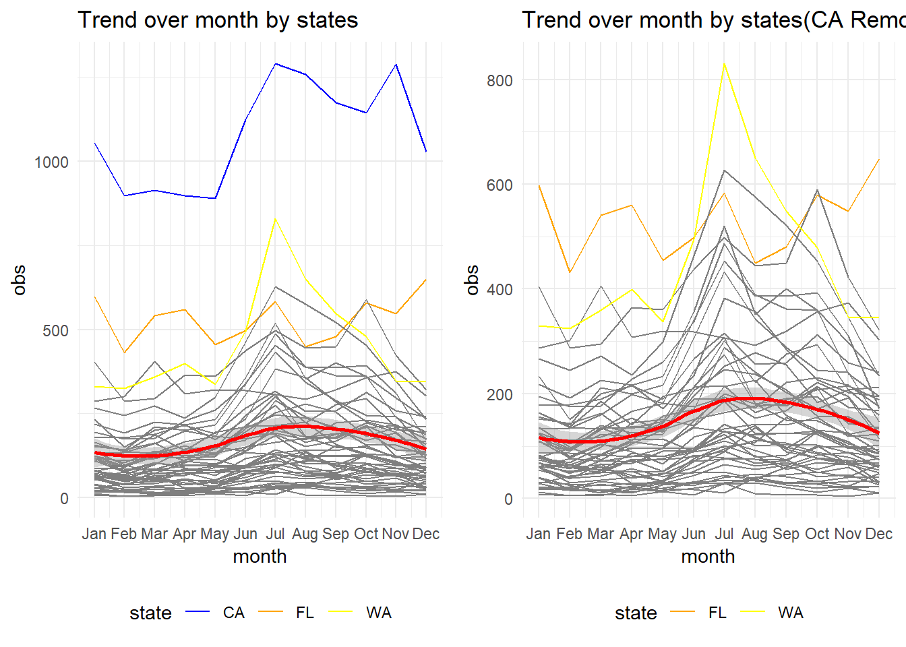
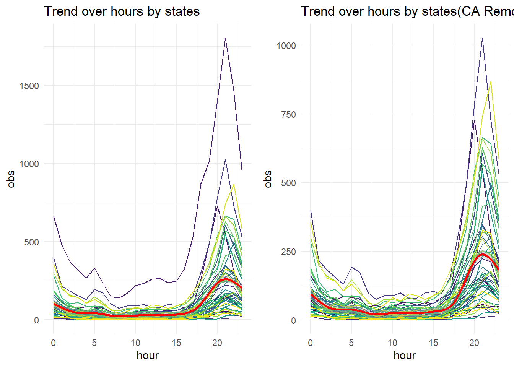

Trend Over Time
## generate date information separately for latter trend analysis
ufo_trend <- read_csv("data/ufo_clean.csv")|>
#slice(1:50000)|>
mutate(
year = year(date_time),
month = month(date_time),
hour = hour(date_time),
weekday = factor(weekdays(date_time),
levels = c("Sunday",
"Monday",
"Tuesday" ,
"Wednesday",
"Thursday",
"Friday",
"Saturday"))
)## Rows: 100820 Columns: 12
## ── Column specification ────────────────────────────────────────────────────────
## Delimiter: ","
## chr (6): city, state, shape, duration, text, location
## dbl (3): city_latitude, city_longitude, dist
## lgl (1): duration_clean
## dttm (2): date_time, posted
##
## ℹ Use `spec()` to retrieve the full column specification for this data.
## ℹ Specify the column types or set `show_col_types = FALSE` to quiet this message.Trend over time by states
Observations trend over years by states
To look into the UFO observations trend over years by states, here we take spaghetti plots to view the total observations of each state throughout years.
## function to generate data for trend analysis
ufo_trend_var <- function(df,var1,var2){
tidy_data <- df |>
group_by(!!sym(var1), !!sym(var2))|>
summarise(
obs = n()
)|>
ungroup()
return(tidy_data)
}
ufo_trend_plot <- function(df,var_time,var_group){
trendplot <- df|>
ggplot(aes(x = !!sym(var_time), y = obs, color = !!sym(var_group)))+
geom_line()+
theme(legend.position = "none")+
geom_smooth(color = "red")
return(trendplot)
}
ufo_shape_plot <- function(df,var_time){
trendplot <- df|>
ggplot(aes(x = !!sym(var_time), y = obs, color = shape))+
geom_line()
return(trendplot)
}ufo_year_trend <- ufo_trend_var(ufo_trend,var1="state",var2="year")## `summarise()` has grouped output by 'state'. You can override using the
## `.groups` argument.ufo_year_trend_plot <- ufo_trend_plot(ufo_year_trend,"year","state")+
labs(title = "Spaghetti plot of observations trend of states over years")
ufo_year_trend_plot## `geom_smooth()` using method = 'gam' and formula = 'y ~ s(x, bs = "cs")'
From the plot of each state’s UFO observations over year, we can see that:
- The total observations of UFO across states went through a rapid increase right after 1995. This may result from the rapid development of Internet at the end of 20th century.
- Most states observations peaked at around 2014 and then started to decline.
- There was a sharp decline of observations at year 2018 for almost all states and then went through another sharp increase in 2019 and 2020.
- The observations within one state varied largely from year to year with sharp increase or decrease.
- UFO reports in CA was far more than other states in every year after 1995. This may due to the population effect.
To avoid the influence of the extreme large observations of CA on the overall trend, we may filter out this state and see the overall trend then.
ufo_year_trend_plot_rm <-
ufo_year_trend |>
filter(!(state %in% c("CA")) )|>
ufo_trend_plot("year","state")+
labs(title = "Spaghetti plot of observations trend of states over years(CA Removed)")
ufo_year_trend_plot_rm## `geom_smooth()` using method = 'gam' and formula = 'y ~ s(x, bs = "cs")'
The overall observations trend changed little compared to the previous one.
Observations trend of states over months
Then we group the original data by state and month to see if there if any trend through out months.
ufo_month_trend <- ufo_trend_var(ufo_trend,var1="state",var2="month")## `summarise()` has grouped output by 'state'. You can override using the
## `.groups` argument.ufo_month_trend_plot <-
ufo_month_trend |>
ufo_trend_plot("month","state")+
scale_x_continuous(breaks = 1:12, labels = month.abb)+
labs(title = "Trend over month by states")
ufo_month_trend_plot_rm <-
ufo_month_trend |>
filter(!(state %in% c("CA")) )|>
ufo_trend_plot("month","state")+
scale_x_continuous(breaks = 1:12, labels = month.abb)+
labs(title = "Trend over month by states(CA Removed)")
plot_grid(ufo_month_trend_plot,ufo_month_trend_plot_rm)## `geom_smooth()` using method = 'loess' and formula = 'y ~ x'
## `geom_smooth()` using method = 'loess' and formula = 'y ~ x'
- The smooth line indicating a trend of average UFO observations in all states of each month.
- The observations slightly went down from January to March, then increased and peaked around Aug, and declined till Dec.
- For most states, summer is when most UFO observations were reported. However, there are some exceptions. UFO observations in state FL peaked at December.
Like what we did in the year trend, we want to reduce the impact of outlier. Therefore, we remove observations of CA. The trend is more clear that observations in most states peaked at July and then declined and reached the lowest at around February.
Obeservations trend of states over hours
ufo_hour_trend <- ufo_trend_var(ufo_trend,var1="state",var2="hour")## `summarise()` has grouped output by 'state'. You can override using the
## `.groups` argument.ufo_hour_trend_plot <-
ufo_hour_trend |>
ufo_trend_plot("hour","state")+
labs(title = "Trend over hours by states")
ufo_hour_trend_plot_rm <-
ufo_hour_trend |>
filter(!(state %in% c("CA")) )|>
ufo_trend_plot("hour","state")+
labs(title = "Trend over hours by states(CA Removed)")
plot_grid(ufo_hour_trend_plot,ufo_hour_trend_plot_rm)## `geom_smooth()` using method = 'gam' and formula = 'y ~ s(x, bs = "cs")'
## `geom_smooth()` using method = 'gam' and formula = 'y ~ s(x, bs = "cs")'
- The average observations during 6:00 to 15:00 were relatively low.
- There was an sharp increase of average observations starting from 15:00 and peaked at around 21:00.
- The average observations started to decline slowly after 21:00.
- People tends to observed UFO during evening than daytime.
After removing the oulier of CA state, the trend is more clear.
Obeservations trend of states over weekdays
ufo_weekday_trend <- ufo_trend_var(ufo_trend,var1="state",var2="weekday")## `summarise()` has grouped output by 'state'. You can override using the
## `.groups` argument.ufo_weekday_plot <- ufo_weekday_trend |>
mutate(
weekday = as.numeric(weekday)
)|>
ufo_trend_plot("weekday","state")+
scale_x_continuous(breaks = 1:7, labels = c("Sun","Mon","Tue","Wed","Thur","Fri","Sat"))+
labs(
title = "Trend over weekdays by states"
)
ufo_weekday_plot_rm<-
ufo_weekday_trend |>
filter(!(state %in% c("CA")) )|>
mutate(
weekday = as.numeric(weekday)
)|>
ufo_trend_plot("weekday","state")+
scale_x_continuous(breaks = 1:7, labels = c("Sun","Mon","Tue","Wed","Thur","Fri","Sat"))+
labs(title = "Trend over weekdays by states (CA Removed)")
plot_grid(ufo_weekday_plot,ufo_weekday_plot_rm)## `geom_smooth()` using method = 'loess' and formula = 'y ~ x'
## `geom_smooth()` using method = 'loess' and formula = 'y ~ x'
The overall trend for all states is not clear. For state CA,the observations declined from Sunday to Monday, then increased during weekdays and peaked at Saturday.
We may remove state CA to check the overall trend again.
Now we may notice a trend showed by the red smooth line that the average observations went through an slow increase started Monday through Friday and peaked at Saturday, then reduced during Sunday.
To make this statement clearer, we can view the bar plot of the observations over weekdays.
ufo_weekday_trend |>
mutate(
weekday = as.numeric(weekday)
)|>
ggplot(aes(x = weekday, y = obs))+
geom_col()+
scale_x_continuous(breaks = 1:7, labels = c("Sun","Mon","Tue","Wed","Thur","Fri","Sat"))+
labs(
title = "Bar plot of observations trend of states over weekdays"
)
The bar plot visualized the trend more clear. The overall observations decreased from Sunday to Monday, then increased day by day and reached the highest values at Saturday.
Trends over time by shape
Trend over year by shape
obs_shape <- ufo_trend |>
group_by(shape)|>
summarise(
obs = n()
)|>
arrange(desc(obs))|>
ungroup()
shape10 <- obs_shape |>
head(10)|>
pull(shape)
ufo_shape <- ufo_trend|>
filter(shape %in% shape10)In total there are 23 shape categories in the original dataset. Here we extract the most observed 10 shapes to see the trend over year.
ufo_year_shape <- ufo_trend_var(ufo_shape,var1="shape",var2="year")## `summarise()` has grouped output by 'shape'. You can override using the
## `.groups` argument.ufo_year_shape |>
mutate(
shape = factor(shape,levels = shape10)
)|>
ggplot(aes(x = year, y = obs))+
geom_line()+
facet_grid(cols = vars(shape))+
theme(axis.text.x = element_text(angle = 90, hjust = 1))+
labs(title = "Spaghetti plot of observations trend of states over years")
For most observed shapes, they have similar trend over year:the observations started to increase rapidly in 1990s and, then peaked at around 2014, followed by an sharp decrease in 2018 and another peak in 2020.
Light, circle and triangle were the most observed shape of UFO. The light shape had the most sharp change rate of all shapes.
However, trends of some shapes had different characteristics.
As for fireball, there was a peak before 2000 and a
relatively slow increase rate after that compared to others
As for disk, this is a traditional shape that comes to
people’s mind when talking about UFO. The observations of disk went
through an increase in 1970s right after the foundation of NUFORC. And
the increase rate of disk observations after 1990s was relatively low.
The highest value of observations in one year of was never over 250. (We
might consider not taking disk as a classic shape of UFO.)